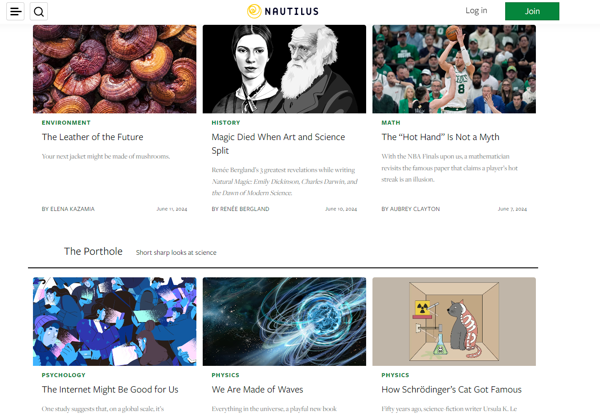
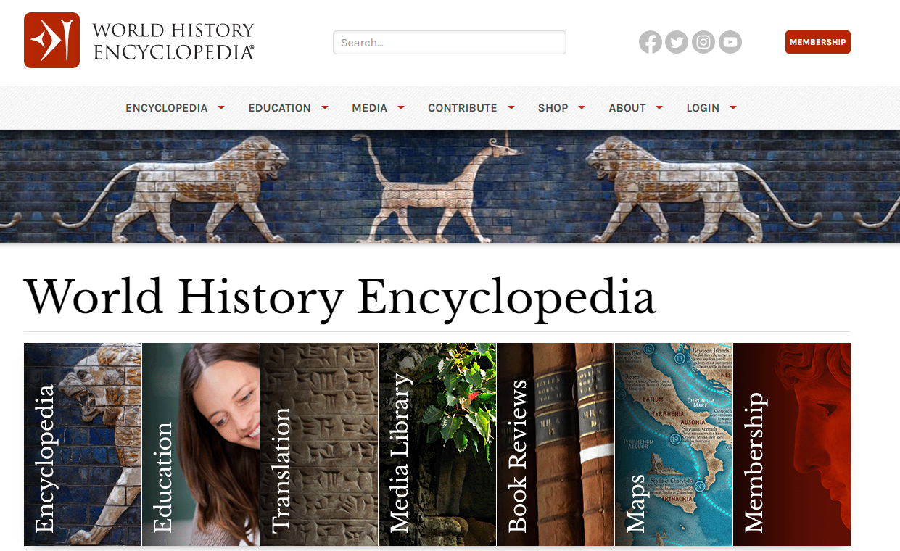
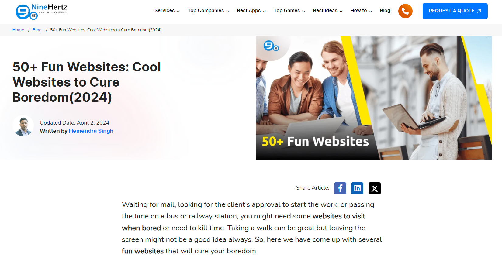

Omschrijving van de site
Hier heb ik een korte beschrijving over wat ik voor mijn portofolio heb gebruikt.
Hieronder zijn de elementen en technieken die gebruikt zijn om deze site te maken.

De kleuren #006400, #72FAB7, #7CC3FB, #000000, #FFFFFF zijn gebruikt, omdat ze een duidelijk contrast hebben met elkaar en hiermee zullen bepaalde elementen beter zichtbaar zijn.

De sitemap is simplistisch gemaakt voor een makkelijk overzicht om het overzicht van het werk niet te verliezen en de gebruiker van de site niet te laten verdwalen.
Inspiratie
Hier zijn screenshots van andere webpagina's waaruit ik inspiratie uit heb genomen.

Ik heb gebruik gemaakt van hoe deze site zijn cards heeft gebruikt en ook de groene kleur van de site.

Ik heb gebruik gemaakt van hoe deze site een logo aan de linker kant heeft geplaatst en vervolgens elementen aan de rechter kant heeft geplaatst bij de header.

Ik heb gebruik gemaakt van hoe deze site zijn links aan de rechterkant heeft geplaatst bij de header.